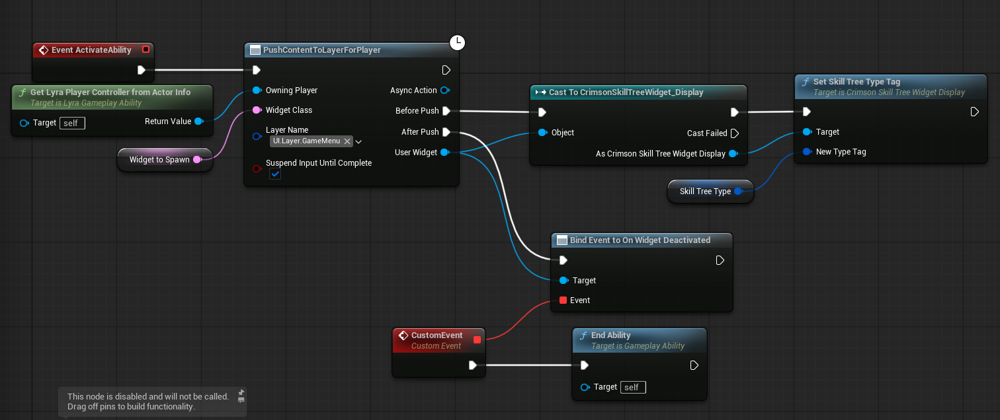

The plugin comes with a complete, pre-made UI that is ready to use. No complex setup is necessary to get it working; you just need to display it on screen.
You can check the Quick Start Video for a quick way to add the UI to screen on an empty project!
Follow these steps to show the skill tree in your game.
W_SkillTree_Display, which is included with the plugin.CrimsonSkillTreeManager (e.g., SkillTree.Player.Core).Here you can see an example of how its added in the Lyra Starter Sample project.
Make sure you set the skill tree type tag before the widget is pushed onto the screen. This must be set before OnActivated is called on the CommonActivatableWidget
That's it! The display widget will automatically find the correct skill tree from the manager and populate itself with the nodes, connections, and data you've created.
If you wish to change the appearance or behavior of the UI, you can create child classes of the provided widgets and override their logic. You should not modify the plugin's widgets directly.
You should see the provided W_SkillTree_Node,W_SkillTree_Display, W_SkillTree_Graph and other blueprints for an example of how they should be set up!
The most common customization is changing how a skill node looks. Here’s how you would do that:
UCrimsonSkillTreeWidget_Node. This will be the parent of your new custom node. Name it something like WBP_MyNode.WBP_MyNode and design it however you like (e.g., add new borders, images, or text blocks).CST_Player_CoreSkills).WBP_MyNode widget. When the graph is built, any node with that tag will use your custom widget instead of the default.